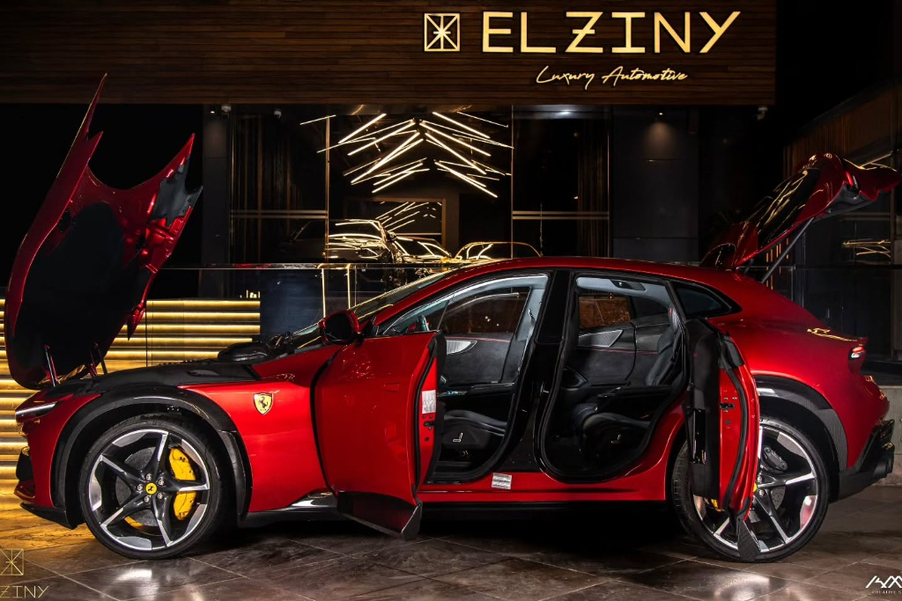
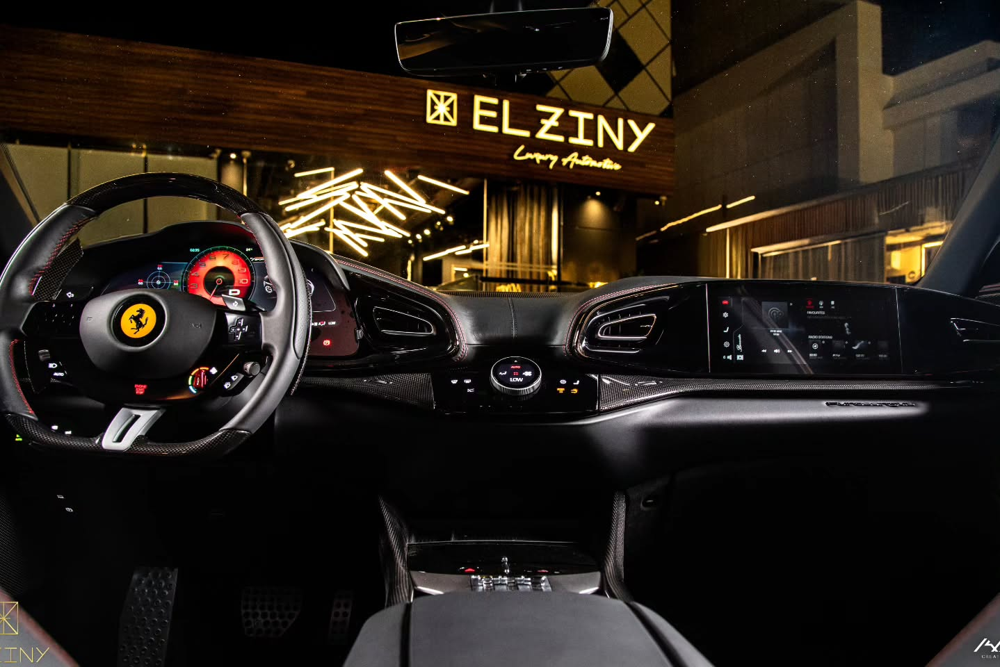
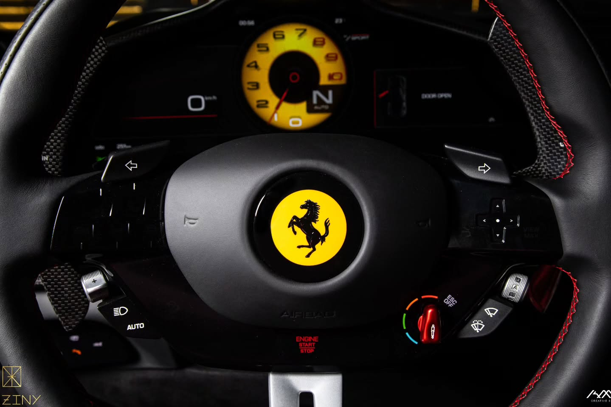

Ferrari's first-ever four-door four-seater — a naturally aspirated 6.5L V12 screaming to 8,250 rpm, producing 725 HP. Finished in Rosso Ferrari with a full carbon interior and red stitching accents. 0–60 in 3.3 seconds. The Purosangue redefines the luxury SUV segment, delivering authentic Ferrari sports car dynamics in a high-riding, versatile package without compromise.
The name 'Purosangue' translates precisely to 'thoroughbred' in Italian, and it describes the car's architecture perfectly. Its sleek, aerodynamic exterior masks a spacious cabin while achieving a perfect 49:51 weight distribution — rare for any four-seater, let alone one of this commanding presence.


Opening the distinctive welcome doors reveals a meticulously crafted cabin inspired by the SF90 Stradale's sporty driving position. All four occupants enjoy beautifully sculpted sport seats, ensuring that passengers experience the same dynamic thrill and comfort as the driver.